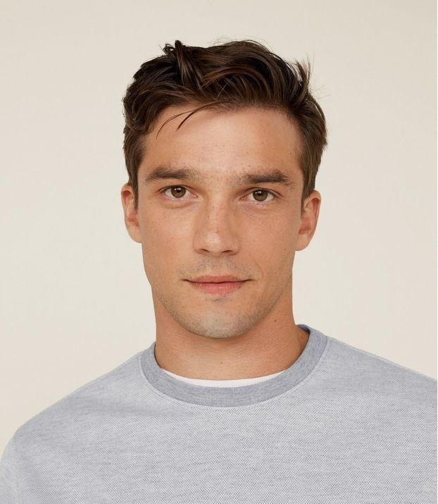
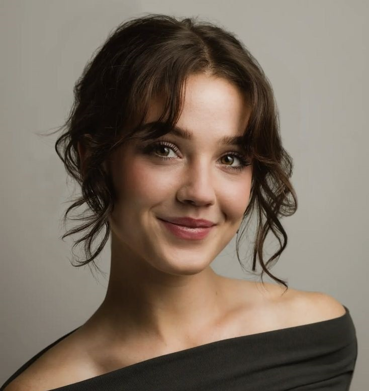

Oblasti portfolija
Ova galerija prikazuje primere različitih kreativnih oblasti i načina na koje se ideje mogu pretvoriti u vizuelno privlačne i profesionalne projekte.


Portfolio može imati različite forme u zavisnosti od vrste delatnosti i ciljeva koje želite da postignete. Prilikom izrade portfolija važno je da odaberete sadržaj koji najbolje predstavlja vaš rad i veštine. Slike bi trebalo da budu kvalitetne,jasno organizovane i usklađene sa tematikom vaših projekata,dok tekst treba da bude kratak, jasan i informativan,sa naglaskom na opis ideje, procesa i rezultata.Pravi portfolio ne prikazuje samo radove,već i način razmišljanja i kreativni pristup,pomažući posetiocima da lakše razumeju vaš stil i profesionalni identitet. Upravo to se trudimo mi da postignemo za Vas ili damo smernice kako da Vaš portfolio bude još bolji.
Ova galerija prikazuje primere različitih kreativnih oblasti i načina na koje se ideje mogu pretvoriti u vizuelno privlačne i profesionalne projekte.
Klijenti dolaze iz različitih industrija i profesija, uključujući preduzetnike, kreativne profesionalce, tehnološke kompanije, marketinške agencije i korporativne timove, pri čemu svaki projekat prilagođavam njihovim specifičnim potrebama, ciljevima i vizuelnom identitetu kako bih obezbedio funkcionalna i estetski dosledna rešenja.

Profesionalni fotograf sa preko 7 godina iskustva u portretnoj i event fotografiji.

Specijalizovana za moderan web dizajn, mobilne aplikacije i izgradnju digitalnih brendova.
Izrađuje moderne i responzivne web stranice za kompanije i preduzetnike.
Postoje kreativni portfoliji namenjeni umetnicima i dizajnerima, profesionalni portfoliji za predstavljanje poslovnih projekata, fotografski portfoliji fokusirani na vizuelne radove,kao i web i UX/UI portfoliji koji prikazuju digitalna rešenja i interfejse.